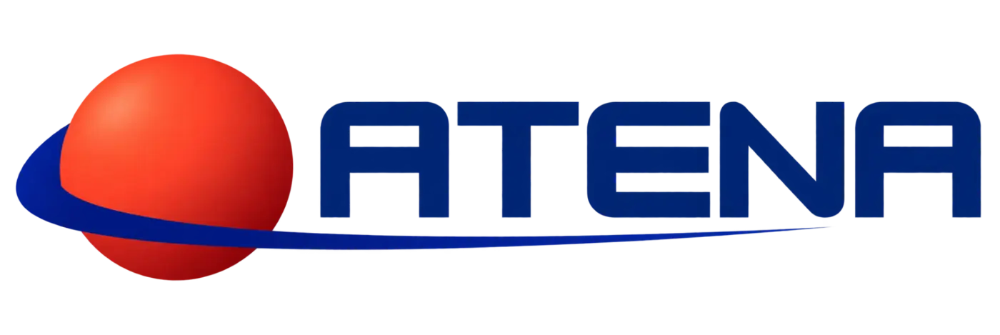

Missão educacional ATENA
O próximo lar
da humanidade.
Uma investigação científica sobre os desafios e as soluções para construir uma colônia humana segura e sustentável em Marte.
- 0,38 g
- gravidade
- −63 °C
- média térmica
- 24h 39m
- um sol

Arquivo da missão
Áreas da pesquisa
Navegue pelas disciplinas para acessar a pesquisa completa da turma. Use a busca para encontrar um assunto específico.
Superfície marciana
“Pesquisar Marte é imaginar, com ciência, como viver além da Terra.”
Panorama da cratera Jezero · Perseverance · NASA/JPL-Caltech/ASU/MSSS
UMA REALIZAÇÃO EM PARCERIA

Organização responsável
ATENA.
Conhecimento em órbita.
A ATENA é uma organização científica fictícia criada pela turma para transformar esta pesquisa em uma missão integrada de exploração e planejamento. Inspirada em agências espaciais e em grandes programas de exploração, ela reúne Física, Química, Biologia e Matemática para investigar como uma presença humana segura e sustentável poderia ser estabelecida em Marte.
O Projeto ATENA é desenvolvido em parceria com o Colégio Ágora Educação Integral, unindo investigação, criatividade e divulgação científica.
Créditos e referências
Fontes do projeto
As referências de cada disciplina podem ser cadastradas na área correspondente. Abaixo estão as fontes visuais usadas neste site.